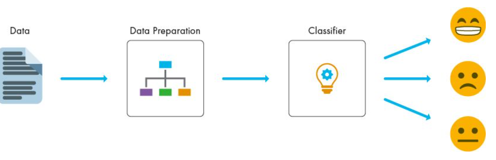
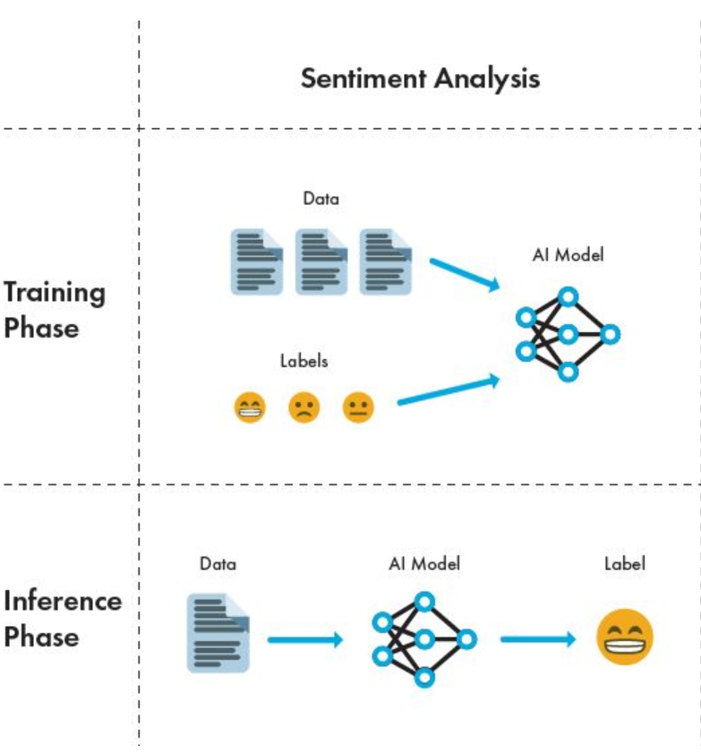
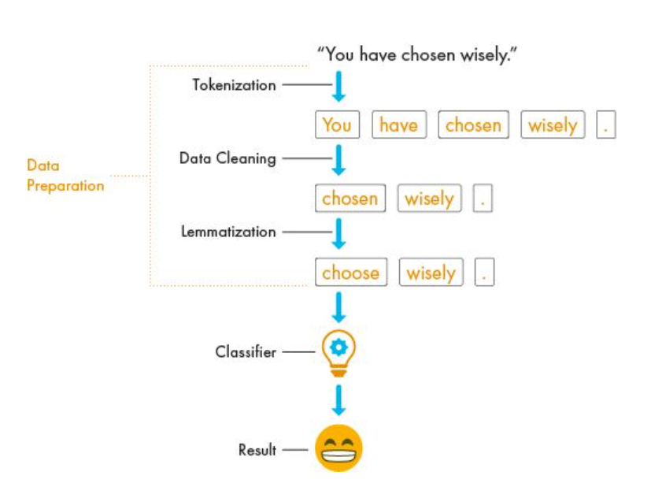
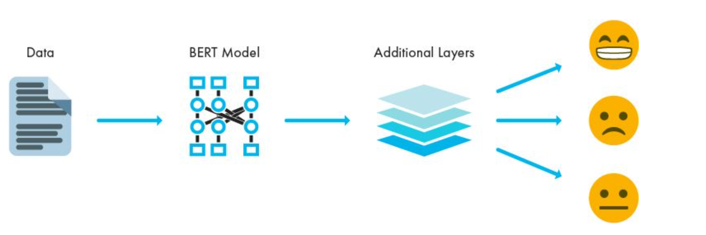
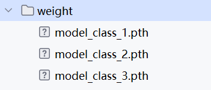

2.2 案例：基于用户评论的情感分析系统¶
1.案例背景¶
随着电商、旅游、内容平台的发展，用户生成内容（UGC）如评论、反馈等已成为企业了解用户满意度、改进产品与服务的重要依据。然而，人工处理海量评论成本高、效率低。因此，构建一个自动化情感分析系统具有重要商业价值。

该案例微调一个中文情感分类模型，实现对用户评论的实时情感判断，辅助企业进行：
- 用户满意度监控
- 产品改进点挖掘
- 舆情分析与危机预警
情感分析 包含两个主要阶段：训练阶段（Training Phase） 和推理阶段（Inference Phase）

在训练阶段，模型通过学习带有标签的数据来理解不同文本的情感倾向。图中显示：
- 数据（Data）：输入给模型的原始文本数据。
- 标签（Labels）：每条数据对应的情感类别（如正面、负面）。
- AI 模型（AI Model）：利用预训练模型不断学习数据和标签之间的关系，调整自身参数，逐渐具备情感分析能力。
这个过程是模型“学习”的过程，目的是让模型能够从数据中提取特征并建立情感判断的规则。
在推理阶段，训练好的模型被用于对新的、未见过的文本进行情感分析：
- 输入：新的文本数据（无标签）。
- 输出：模型预测的情感标签。
这个阶段是模型“应用”的过程，模型不再学习，而是基于训练阶段学到的知识进行预测。
整体的处理流程是：

- 数据预处理：清洗文本、统一编码、分词、划分训练/验证集等
- 模型选择 ：构建合适的模型
- 模型微调：使用预训练语言模型进行迁移学习。
- 模型评估：评估模型准确率、F1 分数等指标。
- 模型推理：利用训练好的模型对新数据进行预测
2.数据准备与加载¶
中文情感分析系统的数据集由以下三个部分组成：
train.csv ：训练集，用于训练机器学习模型。
validation.csv ：验证集，用于在训练过程中调整模型超参数、评估模型性能并防止过拟合。
test.csv ：测试集，用于在模型训练完成后评估其泛化能力和最终性能。
数据中包含两个字段：
label: 情感标签，0 表示负面，1 表示正面。
text: 评论文本，来源于用户对酒店、书籍、电子产品等的真实评价。
训练一个模型，能够根据用户评论文本自动判断其情感倾向：0 → 负面 ，1 → 正面
数据样式如下：
| text | label |
|---|---|
| 选择珠江花园的原因就是方便，有电动扶梯直接到达海边，周围餐馆、食廊、商场、超市、摊位一应俱全。酒店装修一般，但还算整洁。 泳池在大堂的屋顶，因此很小，不过女儿倒是喜欢。 包的早餐是西式的，还算丰富。 服务吗，一般 | 1 |
| 15.4寸笔记本的键盘确实爽，基本跟台式机差不多了，蛮喜欢数字小键盘，输数字特方便，样子也很美观，做工也相当不错 | 1 |
| 房间太小。其他的都一般。。。。。。。。。 | 0 |
使用datasets加载数据集：
from datasets import load_dataset
# 加载数据并返回DatasetDict对象
dataset_dict = load_dataset('csv', data_files={
'train': r'data\train.csv',
'validation': r'data\validation.csv',
'test': r'data\test.csv'
})
# 使用方法
print("数据集结构:", dataset_dict)
print("训练集样本:", dataset_dict['train'][0:5]) # 查看前5训练样本
输出结果为：
数据集结构: DatasetDict({
train: Dataset({
features: ['label', 'text'],
num_rows: 9600
})
validation: Dataset({
features: ['label', 'text'],
num_rows: 1200
})
test: Dataset({
features: ['label', 'text'],
num_rows: 1200
})
})
训练集样本: {'label': [1, 1, 0, 0, 1], 'text': ['选择珠江花园的原因就是方便，有电动扶梯直接到达海边，周围餐馆、食廊、商场、超市、摊位一应俱全。酒店装修一般，但还算整洁。 泳池在大堂的屋顶，因此很小，不过女儿倒是喜欢。 包的早餐是西式的，还算丰富。 服务吗，一般', '15.4寸笔记本的键盘确实爽，基本跟台式机差不多了，蛮喜欢数字小键盘，输数字特方便，样子也很美观，做工也相当不错', '房间太小。其他的都一般。。。。。。。。。', '1.接电源没有几分钟,电源适配器热的不行. 2.摄像头用不起来. 3.机盖的钢琴漆，手不能摸，一摸一个印. 4.硬盘分区不好办.', '今天才知道这书还有第6卷,真有点郁闷:为什么同一套书有两种版本呢?当当网是不是该跟出版社商量商量,单独出个第6卷,让我们的孩子不会有所遗憾。']}
上述数据集中，总样本量：12,000条，数据划分结果为：
- 训练集: 9,600条 (80%)
- 验证集: 1,200条 (10%)
- 测试集: 1,200条 (10%)
训练/验证/测试集比例为8:1:1。
3.数据预处理¶
在进行文本分类时，我们可以优先选择以下模型：
- BERT-base-Chinese
- RoBERTa-wwm-ext
- ERNIE 等中文预训练模型
这里选择了BERT-base-Chinese模型。所以分词器也选择该模型的。
数据处理的流程如下所示：
-
加载BERT中文分词器（文本转ID）
-
文本提取 → 批量编码 → 并统一长度(500)
- 标签提取 → 张量转换
- 输出：input_ids、attention_mask、token_type_ids、labels
具体实现如下：
import torch
from datasets import load_dataset
from transformers import BertTokenizer, BertModel
from torch.utils.data import DataLoader
# 加载字典和分词工具 实例化分词工具
my_tokenizer = BertTokenizer.from_pretrained(r'C:\Users\Abela\Desktop\大模型微调\code\bert-base-chinese')
def collate_fn(data):
# data传过来的数据是list eg: 批次数8，8个字典
# [{'text':'xxxx','label':0} , {'text':'xxxx','label':1}, ...]
sents = [i['text'] for i in data] # 从数据中提取所有文本内容
labels = [i['label'] for i in data] # 从数据中提取所有标签
# 编码text2id 对多句话进行编码用batch_encode_plus函数
data = my_tokenizer.batch_encode_plus(batch_text_or_text_pairs=sents, # 批量编码文本
truncation=True, # 超过最大长度时截断
padding='max_length', # 填充到最大长度
max_length=500, # 设置最大序列长度为500
return_tensors='pt') # 返回PyTorch张量格式
# input_ids:编码之后的数字
input_ids = data['input_ids'] # 获取编码后的token ID张量
# attention_mask:是补零的位置是0,其他位置是1
attention_mask = data['attention_mask'] # 获取注意力掩码，区分真实token和填充token
token_type_ids = data['token_type_ids'] # 获取句子类型ID（用于区分两个句子）
labels = torch.LongTensor(labels) # 将标签列表转换为LongTensor类型
# 返回text2id信息 掩码信息 句子分段信息 标签y
return input_ids, attention_mask, token_type_ids, labels
测试上述代码：
1.数据加载器创建 ：配置批处理参数：批次大小8、数据打乱、丢弃不完整批次等
2. 批次数据处理 ：自动调用collate_fn对每批次数据进行预处理：
3. 数据格式验证 ：检查各张量的形状，验证预处理结果是否符合模型输入要求
具体实现如下所示：
if __name__ == '__main__':
# 创建训练集的数据加载器
my_dataloader = DataLoader(dataset_dict['train'], # 使用训练集数据
batch_size=8, # 每个批次8个样本
collate_fn=collate_fn, # 使用自定义的数据批处理函数
shuffle=True) # 打乱数据顺序
# 打印数据加载器中的批次数量
print('my_dataloader--->', len(my_dataloader))
# 遍历数据加载器，获取批次数据
for i, (input_ids, attention_mask, token_type_ids, labels) in enumerate(my_dataloader):
# 打印当前批次各个张量的形状
print(input_ids.shape, attention_mask.shape, token_type_ids.shape, labels)
# 打印句子编码后的token IDs
print('input_ids', input_ids)
# 打印注意力掩码，区分真实内容和填充部分
print('attention_mask', attention_mask)
# 打印句子分段标识（单句任务通常全为0）
print('token_type_ids', token_type_ids)
# 打印当前批次的标签数据
print('labels', labels)
break # 只处理第一个批次后就退出，用于测试和调试
输出结果为：
# 显示处理后送给模型的数据信息
torch.Size([8, 500]) torch.Size([8, 500]) torch.Size([8, 500]) tensor([1, 1, 0, 0, 1, 0, 0, 0])
# 句子text2id后的信息
input_ids tensor([[ 101, 6848, 2885, ..., 0, 0, 0],
[ 101, 8115, 119, ..., 0, 0, 0],
[ 101, 2791, 7313, ..., 0, 0, 0],
...,
[ 101, 3322, 1690, ..., 0, 0, 0],
[ 101, 1457, 1457, ..., 0, 0, 0],
[ 101, 6821, 3315, ..., 0, 0, 0]])
# 句子注意力机制掩码信息
attention_mask tensor([[1, 1, 1, ..., 0, 0, 0],
[1, 1, 1, ..., 0, 0, 0],
[1, 1, 1, ..., 0, 0, 0],
...,
[1, 1, 1, ..., 0, 0, 0],
[1, 1, 1, ..., 0, 0, 0],
[1, 1, 1, ..., 0, 0, 0]])
# 句子分段信息
token_type_ids tensor([[0, 0, 0, ..., 0, 0, 0],
[0, 0, 0, ..., 0, 0, 0],
[0, 0, 0, ..., 0, 0, 0],
...,
[0, 0, 0, ..., 0, 0, 0],
[0, 0, 0, ..., 0, 0, 0],
[0, 0, 0, ..., 0, 0, 0]])
# 句子的标签信息
labels tensor([1, 1, 0, 0, 1, 0, 0, 0])
4.模型构建¶
情感分析系统的模型构建可以分为两个主要部分：BERT 预训练模型 和 附加层。

1.BERT 模型
- BERT（Bidirectional Encoder Representations from Transformers）是一个预训练的自然语言处理模型，能够理解上下文信息。
- 在情感分析系统中，BERT 负责对输入文本进行深度语义编码，提取句子中的情感特征。
- 通常使用预训练的 BERT 模型作为基础模型，并通过微调（fine-tuning）适应具体任务。
2. 附加层（Additional Layers）
在 BERT 模型的输出之上，会添加一个或多个附加层，用于将 BERT 输出的特征向量映射到具体的情感类别。常见的附加层结构包括：
- 全连接层（Dense Layer）：将 BERT 输出的 [CLS] 标记对应的向量（通常为 768 维）输入到一个或多个全连接层中。
- Dropout 层：用于防止过拟合，提高模型的泛化能力。
- Softmax 层：将最终输出转换为概率分布，对应不同的情感类别（如“正面”、“负面”）。
代码实现如下：
import torch
import torch.nn as nn
from torch.utils.data import DataLoader
from transformers import BertModel
from data_preprocess import dataset_dict,collate_fn
# 加载预训练模型 实例化预训练模型
model_pretrained = BertModel.from_pretrained(r'C:\Users\Abela\Desktop\大模型微调\code\bert-base-chinese')
class MyModel(nn.Module):
def __init__(self):
super().__init__()
# 定义输出全连接层
self.fc = nn.Linear(768, 2)
def forward(self, input_ids, attention_mask, token_type_ids):
# 预训练模型不训练 只进行特征抽取 [8,500] ---> [8,768]
with torch.no_grad():
out = model_pretrained(input_ids=input_ids,
attention_mask=attention_mask,
token_type_ids=token_type_ids)
# 下游任务模型训练 数据经过全连接层 [8,768] --> [8,2]
out = self.fc(out.pooler_output)
return out
模型测试：输入文本 → 数据迭代器 → BERT编码器(冻结) → 自定义分类层 → 情感分类输出，实现如下：
if __name__ == '__main__':
# 实例化数据迭代器 my_dataloader
my_dataloader = DataLoader(dataset=dataset_dict['train'],
batch_size=8,
collate_fn=collate_fn,
shuffle=True,
drop_last=True)
# print('my_dataloader--->', len(my_dataloader))
# 不训练,不需要计算梯度
for param in model_pretrained.parameters():
param.requires_grad_(False)
# 实例化下游任务模型
my_model = MyModel()
print('my_model--->', my_model)
# 调整数据迭代器对象数据返回格式
for i, (input_ids, attention_mask, token_type_ids, labels) in enumerate(my_dataloader):
# 数据送给模型
y_out = my_model(input_ids, attention_mask, token_type_ids)
print('y_out---->', y_out.shape, y_out)
break
输出结果为：
# 模型信息打印
my_model---> MyModel(
(fc): Linear(in_features=768, out_features=2, bias=True)
)
# 模型运算后分类结果展示
y_out----> torch.Size([8, 2]) tensor([[0.4062, 0.5938],
[0.2788, 0.7212],
[0.3671, 0.6329],
[0.2496, 0.7504],
[0.2995, 0.7005],
[0.2566, 0.7434],
[0.2537, 0.7463],
[0.3832, 0.6168]], grad_fn=<SoftmaxBackward>)
5.模型训练¶
模型训练的流程如下：
初始化模型 → 冻结BERT → 数据加载 → 前向传播 → 计算损失 →
反向传播 → 参数更新 → 监控指标 → 保存模型
具体实现如下所示：
from data_preprocess import dataset_dict, collate_fn, tokenizer
from model import MyModel, model_pretrained
import torch
from torch.utils.data import DataLoader
from torch.optim import AdamW
from torch.nn import CrossEntropyLoss
import time
# 模型训练
def train_model():
# 实例化数据源对象my_dataset_train
my_dataset_train = dataset_dict['train']
# 实例化数据迭代器对象my_dataloader
my_dataloader = DataLoader(dataset=my_dataset_train,
batch_size=8,
collate_fn=collate_fn,
shuffle=True)
# 实例化下游任务模型my_model
my_model = MyModel()
# 不训练预训练模型 只让预训练模型计算数据特征 不需要计算梯度
for param in model_pretrained.parameters():
param.requires_grad_(False)
# 实例化优化器my_optimizer
my_optimizer = AdamW(my_model.parameters(), lr=5e-4)
# 实例化损失函数my_criterion
my_criterion = CrossEntropyLoss()
# 设置训练参数
epochs = 3
# 设置模型为训练模型
my_model.train()
# 外层for循环 控制轮数
for epoch_idx in range(epochs):
# 每次轮次开始计算时间
starttime = int(time.time())
# 内层for循环 控制迭代次数
for i, (input_ids, attention_mask, token_type_ids, labels) in enumerate(my_dataloader, start=1):
# 给模型喂数据 [8,500] --> [8,2]
my_out = my_model(input_ids=input_ids,
attention_mask=attention_mask,
token_type_ids=token_type_ids)
# 计算损失
my_loss = my_criterion(my_out, labels)
# 梯度清零
my_optimizer.zero_grad()
# 反向传播
my_loss.backward()
# 梯度更新
my_optimizer.step()
# 每5次迭代 算一下准确率
if i % 5 == 0:
out = my_out.argmax(dim=1) # [8,2] --> (8,)
acc = (out == labels).sum().item() / len(labels)
print('轮次:%d 迭代数:%d 损失:%.6f 准确率%.3f 时间%d' \
% (epoch_idx, i, my_loss.item(), acc, int(time.time()) - starttime))
break
# 每个轮次保存模型
torch.save(my_model.state_dict(), 'weight/model_class_%d.pth' % (epoch_idx + 1))
if __name__ == '__main__':
train_model()
训练结果为：
轮次:0 迭代数:5 损失:0.735494 准确率0.250 时间40
轮次:0 迭代数:10 损失:0.614211 准确率0.875 时间81
轮次:0 迭代数:15 损失:0.635408 准确率0.750 时间119
轮次:0 迭代数:20 损失:0.575522 准确率1.000 时间157
轮次:0 迭代数:25 损失:0.661196 准确率0.625 时间196
轮次:0 迭代数:30 损失:0.546462 准确率0.875 时间234
轮次:0 迭代数:35 损失:0.609517 准确率0.875 时间272
轮次:0 迭代数:40 损失:0.529246 准确率1.000 时间310
轮次:0 迭代数:45 损失:0.474820 准确率1.000 时间348
轮次:0 迭代数:50 损失:0.540127 准确率0.875 时间387
# 从以上的训练输出效果来看，预训练模型是十分强大的，只需要短短的几次迭代，就可以让准确率上88%
模型保存为：

6.模型评估¶
模型评估的流程如下：
加载模型 → 设置评估模式 → 加载测试数据 → 批量前向传播 →
计算预测结果 → 统计准确率 → 输出评估信息 → 返回最终准确率
具体实现：
from data_preprocess import dataset_dict, collate_fn, tokenizer
from model import MyModel
import torch
from torch.utils.data import DataLoader
# 模型评估
def evaluate_model(dataset,model):
# 设置下游任务模型为评估模式
model.eval()
# 设置评估参数
correct = 0
total = 0
# 实例化化my_dataloader
my_loader_test = DataLoader(dataset,
batch_size=8,
collate_fn=collate_fn,
shuffle=True,
drop_last=True)
# 给模型送数据 测试预测结果
for i, (input_ids, attention_mask, token_type_ids,
labels) in enumerate(my_loader_test):
# 预训练模型进行特征抽取
with torch.no_grad():
my_out = model(input_ids=input_ids,
attention_mask=attention_mask,
token_type_ids=token_type_ids)
# 贪心算法求预测结果
out = my_out.argmax(dim=1)
# 计算准确率
correct += (out == labels).sum().item()
total += len(labels)
return correct/total
if __name__ == '__main__':
# 实例化下游任务模型my_model
path = r'C:\Users\Abela\Desktop\大模型微调\code\AE\情感分析案例\weight\model_class_3.pth'
my_model = MyModel()
my_model.load_state_dict(torch.load(path))
print('my_model-->', my_model)
acc = evaluate_model(dataset=dataset_dict['test'],model=my_model)
输出结果为：
0.875
7.模型预测¶
模型预测的流程是：
- 初始化 ：加载训练好的模型权重，设置为评估模式
- 文本预处理：使用tokenizer将文本转换为模型输入格式
- 模型推理：模型进行前向传播计算，得到类别得分
- 后处理：将得分转换为概率，确定最终预测结果
具体实现如下：
from data_preprocess import tokenizer # 导入分词器，用于文本编码
from model import MyModel # 导入自定义的BERT分类模型
import torch # 导入PyTorch深度学习框架
import torch.nn.functional as F # 导入PyTorch函数模块，包含softmax等函数
def predict(text, model_path):
"""对单条文本进行情感分析预测"""
# 加载模型
model = MyModel() # 实例化下游任务模型（BERT + 分类层）
# 加载预训练好的模型权重文件
model.load_state_dict(torch.load(model_path, map_location='cpu'))
# 设置模型为评估模式，这会禁用dropout、batchnorm等训练专用层
model.eval()
# 文本预处理阶段
# 文本编码 - 将原始文本转换为模型可理解的数值格式
encoded = tokenizer.encode_plus(
text, # 输入文本
return_tensors='pt' # 返回PyTorch张量格式
)
# 模型推理阶段
# 预测 - 使用torch.no_grad()禁用梯度计算，节省内存并加速推理
with torch.no_grad():
# 将编码后的数据输入模型进行前向传播
outputs = model(
input_ids=encoded['input_ids'], # token ID序列
attention_mask=encoded['attention_mask'], # 注意力掩码
token_type_ids=encoded['input_ids'] #单句子任务
)
# outputs形状: [1, 2] - 表示一个样本的两个类别得分
# 后处理阶段
# 使用softmax将模型输出转换为概率分布，dim=1表示在类别维度进行
probabilities = F.softmax(outputs, dim=1)
# 使用argmax获取概率最大的类别索引，dim=1表示在类别维度取最大值
predicted_class = outputs.argmax(dim=1).item() # 返回标量值(0或1)
# 将数字标签转换为可读的情感标签
# 0 -> "负面", 1 -> "正面"
sentiment = "正面" if predicted_class == 1 else "负面"
# 获取预测类别的置信度（概率值）
confidence = probabilities[0][predicted_class].item()
# 返回预测结果：情感标签和置信度
return sentiment, confidence
# 测试
if __name__ == '__main__':
# 定义模型权重文件路径
model_path = r'C:\Users\Abela\Desktop\大模型微调\code\AE\情感分析案例\weight\model_class_3.pth'
# 测试文本 - 用于验证模型预测效果
test_text = "这个产品真的很不错，性价比很高！"
# 调用预测函数，获取情感分析结果
sentiment, confidence = predict(test_text, model_path)
# 打印预测结果
print(f"文本: {test_text}")
print(f"预测情感: {sentiment}") # 输出：正面
print(f"置信度: {confidence:.4f}") # 输出：0.9563（示例值）
输出结果为：
文本: 这个产品真的很不错，性价比很高！
预测情感: 正面
置信度: 0.8933
8.总结¶
上述详细介绍了基于BERT的中文情感分析系统的完整构建流程，如下所示：
1.案例背景 ：自动化处理用户评论，用于满意度监控、产品改进、舆情分析
2.数据准备 ：用户真实评论（酒店、书籍、电子产品等），
3.数据预处理 ：BERT-base-Chinese分词器，文本转id
4.模型构建 ：BERT预训练模型 + 自定义分类层
5.模型训练 ：AdamW，学习率5e-4 交叉熵损失，每个epoch保存权重文件
6.模型评估 ：model.eval() + torch.no_grad() 准确率
7.模型预测 ：加载模型 → 文本编码 → 模型推理 → 结果后处理